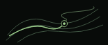

A bigger scene. A smaller companion.
Six versions of Still Climbing. Each pairs a new main illustration with a different scene in the floating header. Open a version and scroll: the main scene moves while it’s in view; the smaller companion follows your reading after that.
The large agent panel is gone. “Agent version” is now a quiet navigation link in all six.
The ascent
Layered ridges / switchback map
In the header
More depth in the mountain drawing, a hiker finding the route, and a close-up of the switchbacks in the header. The closest continuation of the selected design.
Open The ascentLive scroll preview
High pass
Mountain road / cyclist
In the header
A bicycle climbs the bends of a mountain pass. The header switches to a simple side-on ride: turning wheels, a rolling road, and steady forward movement.
Open High passLive scroll preview
After dark
Headlamp ascent / resting cat
In the header
A headlamp moves away from camp, up through a night landscape. A cat settles into the header, wakes, and stretches. Effort in the main scene; a little company while reading.
Open After darkLive scroll preview
Contour study
Topographic route / runner
In the header
The mountain becomes a map: contour lines, a route, and a moving position marker. The header changes perspective again, with a runner whose stride follows your scrolling.
Open Contour studyLive scroll preview
One more ridge
Mountain traverse / elevation profile
In the header
A route with more than one climb. The hiker crosses a saddle and keeps going. In the header, a small elevation profile traces the ups and downs as you read.
Open One more ridgeLive scroll preview
The window seat
Cat and mountain view / wandering cat
In the header
A cat watches the mountains and a passing cyclist through a window. The scenery shifts as you scroll. Later, a different small cat wanders across the floating header.
Open The window seatLive scroll preview
My shortlist
The ascent is the most focused evolution of Still Climbing. After dark gives it more personality by letting the cat keep you company while reading. High pass is the strongest cycling direction.
The main and header scenes can be mixed later. For this review, each pairing is complete and uses the same words and writing structure, with the agent link equally quiet.
All artwork is original SVG. Movement follows scrolling and stops when you stop. Reduced-motion settings keep static artwork. These are local design previews, not changes to the public site.